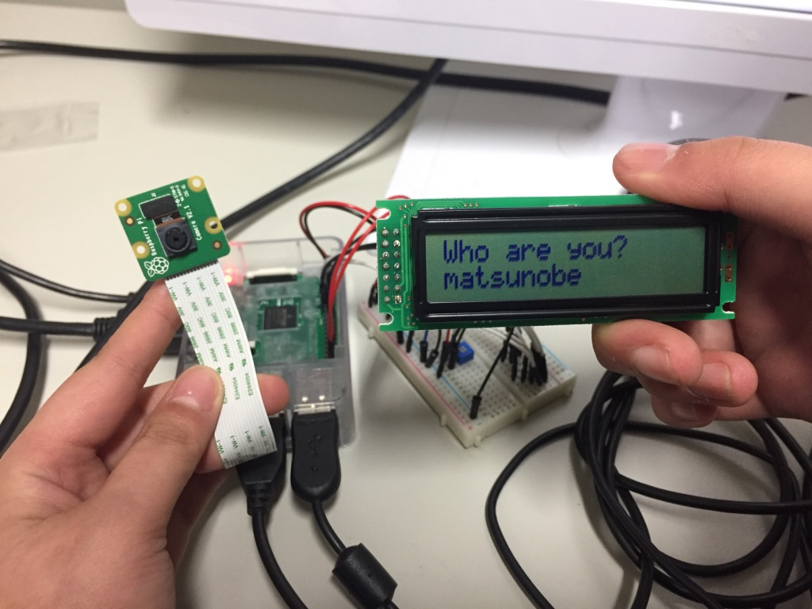

期間 | 1ヶ月 人数 | 1人 言語 | Python
Raspberry Piを用いて，研究室の飲料管理システムを構築した．私が所属している研究室にはコーヒーと紅茶が常備されおり，誰でも利用することができる． 利用者は，その都度置いてある紙に正の字を書いていき，年度末に精算するというシステムである．しかし，この方法では他者によるなりすましが容易に行われてしまう． そこで，Raspberry Piのカメラを用いて不正ができないシステムを構築した．具体的には，誰が何を飲んだか入力することはもちろん，さらにその操作が行われた瞬間に利用者の顔を 撮影する．この画像から，本当に本人が利用したのかを確認することができる．